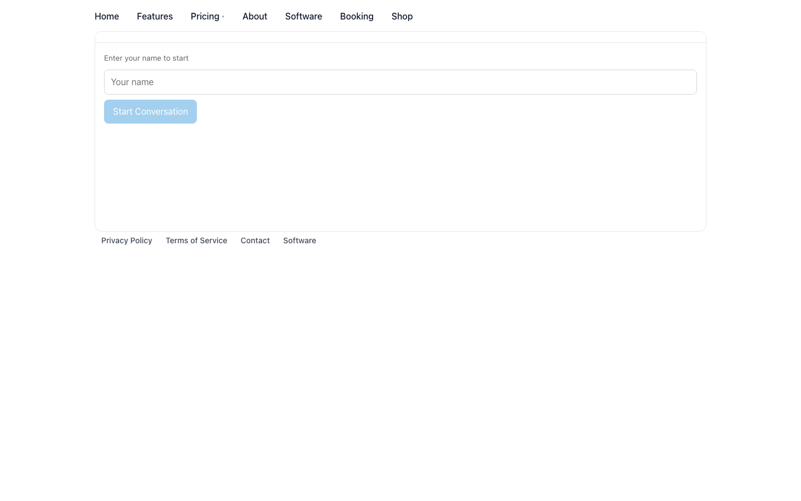
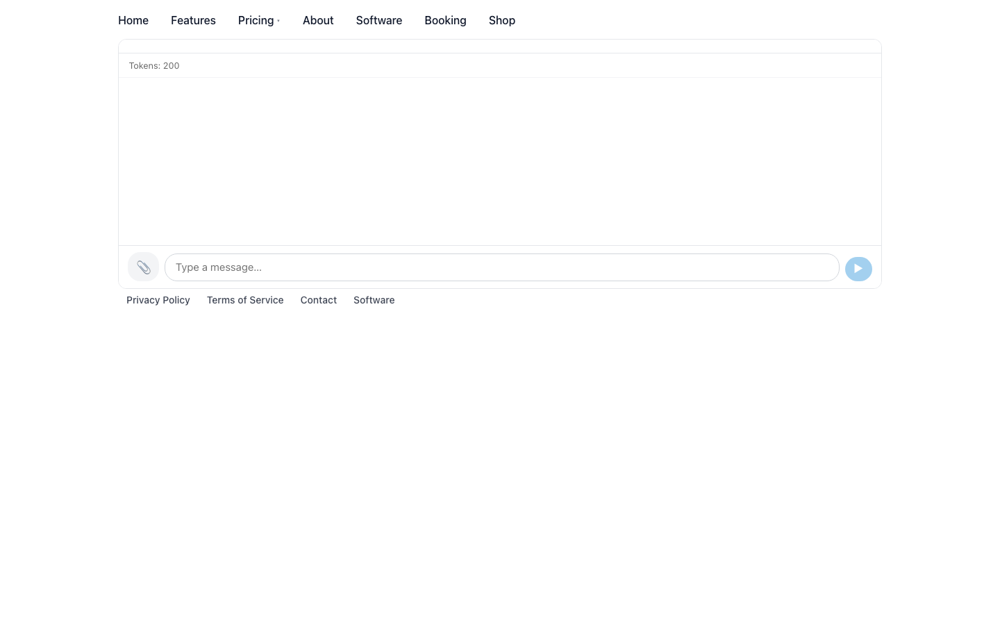
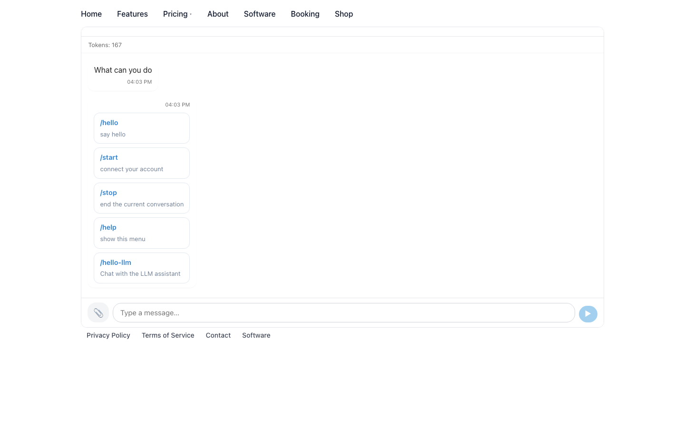
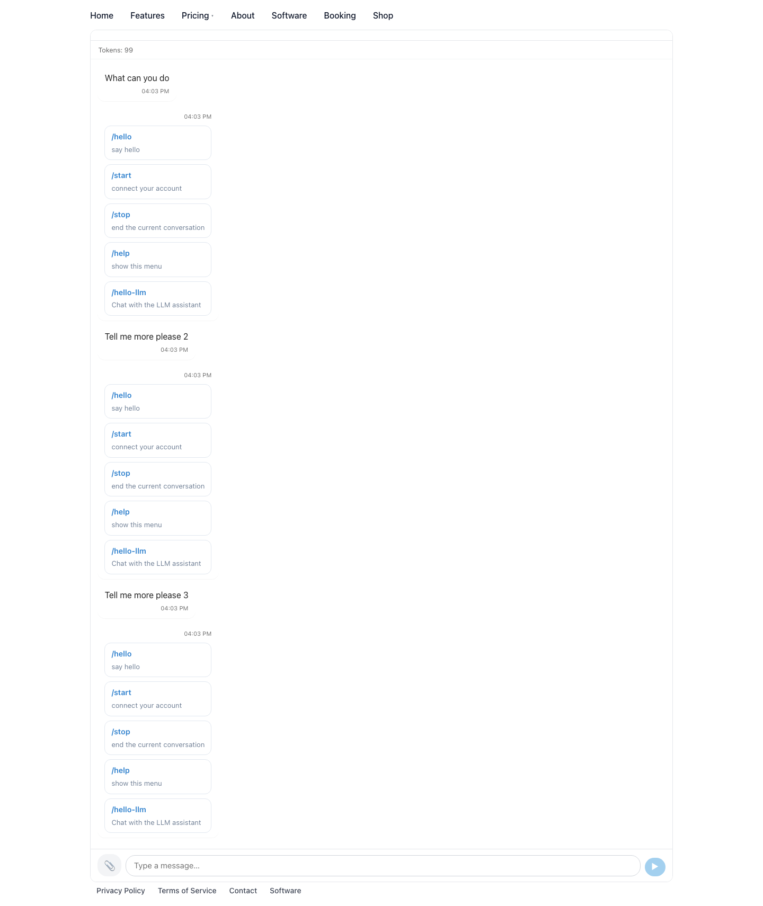
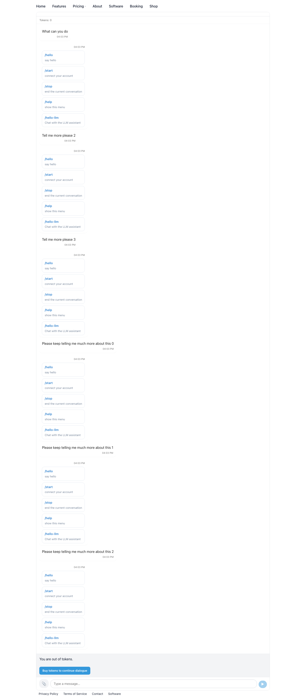
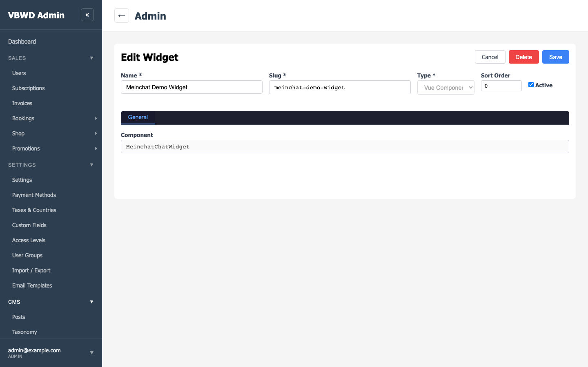

vue-component widget
(slug=meinchat-demo-widget, visibility=public, member_nicknames=['assistant']),
dropped into a public CMS page's layout area.assistant bot via POST /api/v1/messaging/widget/start — which mints a guest access token,
a room, and an initial token grant.HTTP 402 {code:'insufficient_tokens'}) and the widget shows the
"Buy tokens to continue dialogue" block (links to /tokens).Numbers observed in this run: initial grant Tokens: 200; first question "What can you do" = 4 words; balance arc start Tokens: 200 → Tokens: 167 → Tokens: 133 → Tokens: 99 → … → buy-block at 0. Console errors: 1.
The published CMS page http://localhost:8080/chat-demo renders the MeinchatChatWidget in its
layout's main area (header + footer nav around it). Because the widget is visibility=public,
an anonymous visitor sees the "Enter your name to start" prompt + a name field and a
Start Conversation button — no login required.

Entering the name "Alex" and clicking Start Conversation calls
POST /api/v1/messaging/widget/start (public, no auth): the backend mints a guest access token
+ a room and returns the initial token grant. The chat pane opens showing the welcome state and the
remaining balance: Tokens: 200 (the demo grant guest_initial_tokens was raised to 200 so
the multi-exchange arc is visible before the buy-block).

The guest sends "What can you do" (4 words). The send debits the question's words server-side,
and the assistant bot answers in the room with its help-menu (/hello,
/start, /stop, /help, /hello-llm). Both bubbles are
visible — the guest's question (right) and the bot's answer (left). The answer's words are charged too, so
after this turn the balance is Tokens: 167 (the verbose help-menu answer is exactly why one turn costs
~35 words: 5 question + ~30 answer).

Each further turn (question words + the bot answer's words) keeps draining the balance — the live arc observed: start Tokens: 200 → Tokens: 167 → Tokens: 133 → Tokens: 99. The displayed balance is refreshed from the backend's authoritative count after every send and every bot answer (the 402 gate is the real stop).

Once the balance reaches 0 the next send is refused by the backend with
HTTP 402 {code:'insufficient_tokens'}. The widget catches this and renders the
"Buy tokens to continue dialogue" block, which links to /tokens — the guest can no
longer send until they top up. This is the word-based economy's hard stop, proven in the browser.

The same widget in the fe-admin CMS widget editor: a vue-component widget
(Name "Meinchat Demo Widget", Slug meinchat-demo-widget, Type
"Vue Component") whose Component field is MeinchatChatWidget. The stored config also
carries member_nicknames=['assistant'] and visibility=public. An admin drops
this widget into any layout area to place a bot-widget on a public page.

✓ A public, unauthenticated visitor named themselves, started a conversation with the
assistant bot, exchanged several messages (assistant replied with the help-menu), watched the
token balance fall by exactly the word count of each turn, and — once the balance hit 0 — was correctly
gated by the Buy tokens to continue dialogue block instead of being able to send. No console errors;
the widget rendered live from the fe-user Vite dev source.